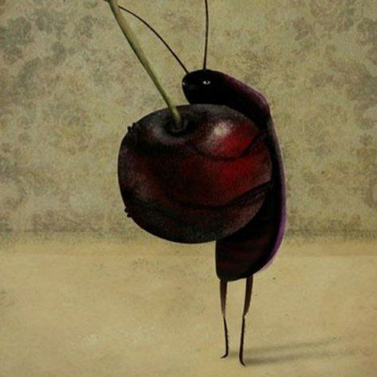

Hi! I’m a self-taught programming enthusiast who learns to code purely out of curiosity and enjoyment. For me, programming is not just a skill, but a creative process that allows me to explore ideas, solve problems, and understand how things work under the hood.
I enjoy taking my time to learn, experiment, and gradually improve my knowledge. I’m especially interested in building a strong foundation and discovering new approaches and technologies along the way.
Outside of coding, I love reading fiction. Stories, characters, and imaginary worlds help me relax, think differently, and stay inspired. I believe that creativity and logic go hand in hand, and both play an important role in my learning journey.
I’m constantly learning, experimenting, and enjoying the process — one line of code at a time.
